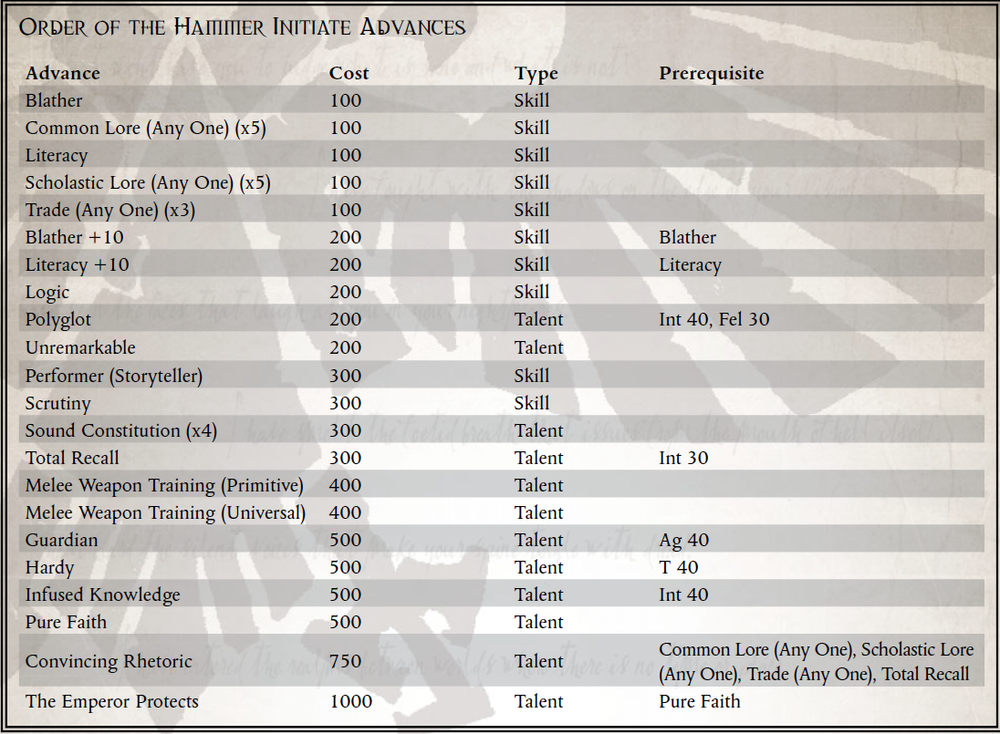

“肉体的劳作和精神的劳作，只因透视的错觉而分不开。”
——第四节，第七章，尼科梅德斯·基夫的教诲
Nicomedes Keefe 对在 Foulstone 建立与世隔绝的社会至关重要，该社会后来以他的名字命名为“锤子勋章”。尽管他最初担心这些奉献者以及他们对 Koronus Expanse 的孤立信仰，但他多次重访这个世界，多年来居住在那里的隐士给了他相当大的支持。基夫在他们共同的 Lux Salvationis 航行中向苦行者展示的农业方法允许其居民生产略高于维持生计的水平，他们不请自来地给他施舍以支持他在其他世界的努力。一些隐士甚至与基夫一起执行他的任务，从这些旅程中带回新兵作为苦行者。
Foulstone 的隐士们以他们的热情好客而自豪，他们认为这是 Nicomedes Keefe 本人通过他的行为所宣扬的美德之一。这些苦行者大多满足于生活
虔诚的劳动者，在他们的星球上生死存亡，偶尔会为访问他们避难所的旅行者提供帮助，从流氓商人到传教士再到朝圣者。通过在科罗努斯广域这个无情的领域为旅行者提供这个避难所，锤子骑士团相信他们可以回报基夫很久以前提供的帮助，使帝国能够进军以转变新的世界并获得新的资源。
然而，这个松散团体的一些成员认为，他们必须做更多的事情，离开 Foulstone 世界，追随教团崇敬的传教士的脚步。这些人通常不是传教士，也不是任何形式的教会权威，因此，他们并没有改变新的世界，而是专注于利用尼科梅德斯·基夫向他们的祖先传授的知识，即新帝国殖民地在广域网的重要性。这些“锤子勋章”的流动成员通过基夫曾经挥舞并留在 Foulstone 上的动力锤子的符号来识别自己。他们相信应用知识是忠实崇拜的关键，他们冒险到遥远的地方用他们的智慧帮助人类帝国的扩张。考虑到他们的流动生活方式和科罗努斯广域的严酷生活现实，这个群体的长期生存者往往是坚强和足智多谋的。许多人还拥有一定程度的武力，因为浩瀚的野蛮需要这种技能。
随着许多盗贼商人活跃在这个地区，有无数的小定居点居住着伟大的贸易王朝的仆人。这些殖民地中的大多数都是有目的的，旨在开发特定资源或实现房屋总体目标中的某些其他特定角色。锤子骑士团的新成员寻找这样的殖民地，他们热切地相信，通过将基夫传授给他们的骑士团的秘密，他们可以帮助他们在帝国的新前哨中蓬勃发展。帝国如此。因此，这个教团的成员经常将大量信息作为他们虔诚实践的一部分来记忆，以惊人的速度消耗大量的世俗知识。铁锤教团最狂热的成员认为，所有知识——无论多么专业或看似微不足道——本质上都是神圣的，值得他们花时间。这些强迫性的研究人员毕生致力于将所有这些铭刻在他们的脑海中，以无情的痴迷揭示无数事实。其他人在他们的选择上更为务实，他们认为尼科梅德斯·基夫只专注于有用的知识，并称他与贵族出身的明确分裂是对某些学习的拒绝。与大多数哲学分歧的情况一样，锤子骑士团的大多数成员都处于中间位置，但教义分歧仍然沾染了极端分子之间暴力冲突的鲜血。
铁锤教团的成员有着令人难以置信的特殊动机，从真正的好奇心到虔诚的狂热，但他们都认为可以通过应用知识来解决他们面临的问题，因此挖掘丢失的信息以促进帝国的利益是他们一生所能从事的最神圣的追求。锤子骑士团的成员对盗贼商人来说非常有用，提供了关于哲学和实践主题的广泛信息。当然，当这些知识经过智慧的磨练，从个人经验或他人的榜样中获得时，它是最有价值的。
加入锤子骑士团需要多年研究 Nicomedes Keefe 撰写的各种文章，涉及从哲学到农业的各个主题。通常，新人的学习由教团的固定成员监督。尽管大多数成员都在 Foulstone 世界上进行研究，在隐居处以苦行者的身份生活时记住大量信息，但有时，锤子勋章的流动成员会在路上接受学徒。
所需职业：任何人类探险家
替代等级：1 或更高 (5,000 xp)
要求：智力35，韧性35
其他要求：这位探险家必须曾师从一名或多名 Foulstone 的苦行僧，并至少前往该世界的锤神殿朝圣一次。

令人信服的言辞
先决条件：普通知识（任意一项）、学术知识（任意一项）、贸易（任意一项）、全面召回
这位探险家的演说经过精心设计，通过精心计算的情感和理性诉求帮助他将盟友转向他的事业。
该角色可以使用他的智力特性代替他的友谊特性来进行魅力、指挥、喋喋不休、表演者（讲故事的人）测试。